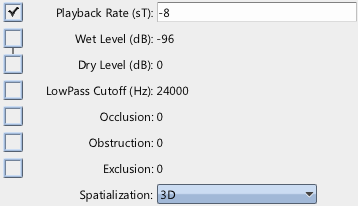
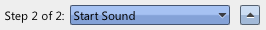
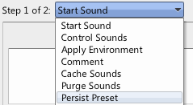
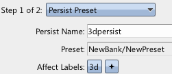

|
Persisted Presets & 3D Sounds |
| Navigation |
This guide will cover how to set up Presets to automatically apply to sounds based on a label query, in this case, all sounds with the label "3D" will be marked as 3d spatialized.
Requisite Terminology
New Terminology
Steps

Since there isn't an easy way to see that this sound is 3D in Miles Studio, we make the affected sounds pitch down by 8 semitones to make the effect more obvious.

The arrows next to the step's type in an event allow you to move the event step around within the event itself. In this case, we want this new event step to occur before the sound starts, so we move it up.


The name of the persist is used to remove it in the future, should you desire. The remainder of the event step should be clear - we are specifying that the preset created in step 2 be applied to all sounds that have the label "3D", as well as any sounds that start in the future with the label "3D".
 Applying User Volumes Applying User Volumes |
 Sound Designer User Guide Sound Designer User Guide |
 Using Multiple Sound Banks Using Multiple Sound Banks |

|
Miles Sound System 9.3b
E-mail miles3@radgametools.com for technical support. Copyright © 1991-2012 by RAD Game Tools, Inc. All Rights Reserved. |

|